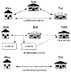

Click Here!


|
Click Here! |
|
| |
|
|
|
To access the contents, click the chapter and section titles.
Applied Cryptography, Second Edition: Protocols, Algorthms, and Source Code in C (cloth)
In the real world, lawyers are often used as arbitrators. For example, Alice is selling a car to Bob, a stranger. Bob wants to pay by check, but Alice has no way of knowing if the check is good. Alice wants the check to clear before she turns the title over to Bob. Bob, who doesn’t trust Alice any more than she trusts him, doesn’t want to hand over a check without receiving a title.

Enter a lawyer trusted by both. With his help, Alice and Bob can use the following protocol to ensure that neither cheats the other:
In this protocol, Alice trusts the lawyer not to give Bob the title unless the check has cleared, and to give it back to her if the check does not clear. Bob trusts the lawyer to hold the title until the check clears, and to give it to him once it does. The lawyer doesn’t care if the check clears. He will do his part of the protocol in either case, because he will be paid in either case. In the example, the lawyer is playing the part of an escrow agent. Lawyers also act as arbitrators for wills and sometimes for contract negotiations. The various stock exchanges act as arbitrators between buyers and sellers. Bankers also arbitrate protocols. Bob can use a certified check to buy a car from Alice:
This protocol works because Alice trusts the banker’s certification. Alice trusts the bank to hold Bob’s money for her, and not to use it to finance shaky real estate operations in mosquito-infested countries. A notary public is another arbitrator. When Bob receives a notarized document from Alice, he is convinced that Alice signed the document voluntarily and with her own hand. The notary can, if necessary, stand up in court and attest to that fact. The concept of an arbitrator is as old as society. There have always been people—rulers, priests, and so on—who have the authority to act fairly. Arbitrators have a certain social role and position in our society; betraying the public trust would jeopardize that. Lawyers who play games with escrow accounts face almost-certain disbarment, for example. This picture of trust doesn’t always exist in the real world, but it’s the ideal. This ideal can translate to the computer world, but there are several problems with computer arbitrators:
Even so, arbitrators still have a role to play. In protocols using a trusted arbitrator, the part will be played by Trent. Adjudicated Protocols Because of the high cost of hiring arbitrators, arbitrated protocols can be subdivided into two lower-level subprotocols. One is a nonarbitrated subprotocol, executed every time parties want to complete the protocol. The other is an arbitrated subprotocol, executed only in exceptional circumstances—when there is a dispute. This special type of arbitrator is called an adjudicator (see Figure 2.1b). An adjudicator is also a disinterested and trusted third party. Unlike an arbitrator, he is not directly involved in every protocol. The adjudicator is called in only to determine whether a protocol was performed fairly. Judges are professional adjudicators. Unlike a notary public, a judge is brought in only if there is a dispute. Alice and Bob can enter into a contract without a judge. A judge never sees the contract until one of them hauls the other into court. This contract-signing protocol can be formalized in this way: Nonarbitrated subprotocol (executed every time):
Adjudicated subprotocol (executed only in case of a dispute):
|
|||||||||||||||||||||||||||||||||||
|
Products | Contact Us | About Us | Privacy | Ad Info | Home
Use of this site is subject to certain Terms & Conditions, Copyright © 1996-1999 EarthWeb Inc. All rights reserved. Reproduction whole or in part in any form or medium without express written permision of EarthWeb is prohibited.
|
){kind=link}
){kind=link}